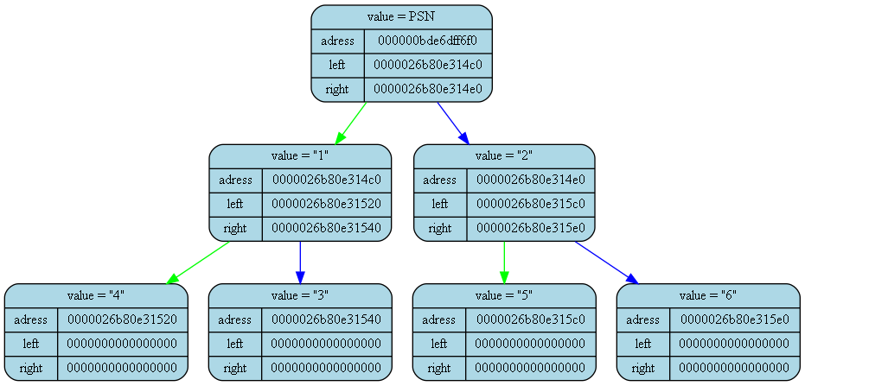

<pre>
<pre>

Tree dump from (int main()) at (main.cpp) at line (18):
tree [000000bde6dff6c0] "&tree" at (int main()) at (main.cpp)(14):
{
	status   = 1
	error    = 0
	size     = 7

	((("4")"1"("3"))PSN(("5")"2"("6")))
}
